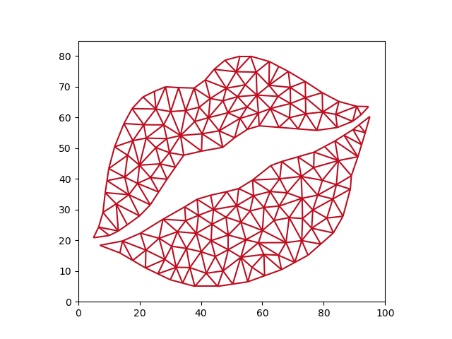

Note
Go to the end to download the full example code
Xoxo#
This is a small unstructured grid consisting of two unconnected parts. This is downloaded via xugrid.data.xoxo(). The topology data is downloaded to a local directory if it’s not there already.
import matplotlib.pyplot as plt
import xugrid
grid = xugrid.data.xoxo()
fig, ax = plt.subplots()
xugrid.plot.line(grid, ax=ax, color="#bd0d1f")
ax.set_xlim([0.0, 100.0])
ax.set_ylim([0.0, 85.0])
ax.set_aspect(1)
Total running time of the script: ( 0 minutes 0.094 seconds)